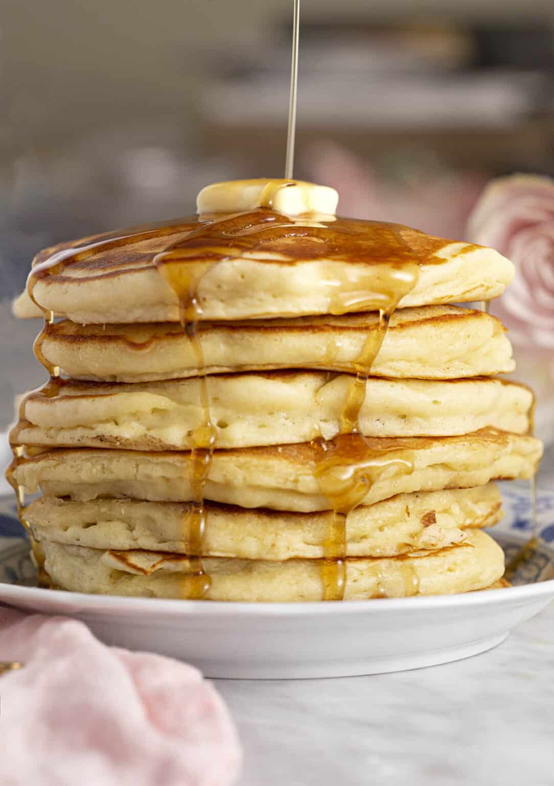

Pancakes

A stack of awesome, tasty pancakes!
Ingredients
- Buttler
- Vanilla Extract
- Baking Powder
- Egg
- Flour
- Sugar
- Salt
Steps
- Sift the flour, sugar, baking powder and salt into a large bowl. Whisk the ingredients together and set aside. In a small bowl melt the butter and set aside.
- In a separate bowl add the buttermilk, egg and vanilla then whisk together.
- Pour the melted butter into the milk mixture and stir together.
- Pour the wet mixture into the dry. Begin heating your pan on medium high with a pat of butter for lubrication.
- Whisk together until JUST combined. Don’t worry about any little lumps you see.
- Scoop about a third of a cup of the batter and add it to your heated, buttered pan. Cook until golden brown, flip then and cook until golden.